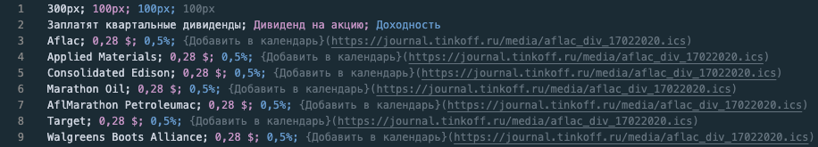
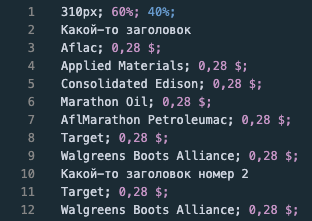

- CSV – это текстовый формат отображения табличных данных. Он очень простой в освоении;
- В этом скрипте я использую CSV-подобный синтаксис;
- Очень важно соблюдать форматирование, иначе что-то может пойти не так;
- Откройте свой любимый текстовый редактор и создайте в нем файл в формате .csv;
- В формате .csv все данные по горизонтали разделяются между собой точкой с запятой и пробелом после него (; ), все данные по вертикали — переносом строки;
- Первая строка вашего файла будет содержать 1+N чисел, где первое число это ширина всей таблицы, а последующие ширины каждого столбца;
- Вторая строка будет представлять из себя заголовки таблицы;
- Дальше идут табличные данные. Для примера:

У меня в VSCode стоит очень удобный плагин, который подсвечивает столбцы в .csv, вот ссылка
- Для мобильной версии всё аналогично:

- Примеры кода вставлю сюда позже, ближе к «релизу» :)
- WARNING: версия для мобильных таблиц пока в разработке, переключатель не функционирует.